本篇文章不是讲docker原理以至于很多高深的概念，因为我不懂啊，我就是初学者，我就是想了解了解是个啥东西，看完之后能给自己给别人吹牛逼，我知道docker了，但是最后呢，再打一下自己的脸，对不起，我还不会用，哈哈哈，言归正传，我们说事情。

docker为解决什么问题而生
学习一个新技术的时候，我总是喜欢弄清楚这个技术怎么来的，那我们也聊聊docker吧；你是否之前遇到这样的问题，一直困扰着你？
- 开发个PHP，我至少要装个PHP，Apache，MySQL，有时候得装个redis或者memcache吧，好吧，那倒也不难，新手一天，老鸟一个小时也能搞定；
- 哎，不行，我听说NGINX不错，我想试试，我还想玩玩Python，Java，我得弄个Tomcat，我操大部分的时间用在了安装软件上，我想要的能一键安装多好啊，想要哪个选哪个，自由组合；
- 终于弄完了，Java web项目跑起来了，哎，我的PHP应用怎么访问不了了，我操，要是这些东西能独立开来多好啊，不要混在一起啊；
- 吭哧吭哧一个月，项目要上线，线上环境还得弄，一个月之前我是怎么做的来？为啥在我的电脑上好使，到了服务器上就不行了呢？就不能有个能移动的环境吗，我这里弄好了，哪里都可以，在坑人这件事情上，试问苍天绕过谁？
- 年纪大了，老板眷顾我，给我招了个小妹妹过来一起写代码，可是妹妹说新电脑环境我弄不好，整了半天还是有问题，哎，此生注定和安装软件结下不解之缘。
- 。。。。。。。。。😔😔😔😔😔😔😔
docker因运维而生，也是为运维服务，它提出的口号是：Build，Ship，and Run Any App，Anywhere
可以看看作者的演讲PPT，https://www.slideshare.net/jpetazzo/docker-automation-for-the-rest-of-us?from_action=save
什么是docker？
前面大概说了docker解决了什么问题，但是也没说完，因为说不完，它可以做的事情很多。像我这样的入门者，第一个问题当然是docker是什么，docker是啥，不同的人不同的说法。
关于docker是什么，有个著名的隐喻：集装箱，但它却起了个docker的名字（码头搬用工），不管这个了。从集装箱你能想到什么，你可以把集装箱装在船只上，火车，火车或者飞机上随便跑，那么集装箱里面装的是什么东西呢？你的应用。形象吧，很形象，很符合docker的气质。为什么集装箱能被拉着到处跑，火车汽车飞机轮船都可以，因为它订了标准，就这么大，超过一寸一分都不行，正因为这个标准集装箱可以到处跑，docker也正是因为这个标准，可以装载着我门开发的“bug”满世界跑，运维工程师们就可以用标准化的工具让全世界看到我们可爱的“bug”。那么docker是什么？是个标准，针对PASS的自动化运维工具，用过ansible的肯定记得要写playbook，playbook其实也就是个标准。
以下是摘抄自：什么是 Docker ？
如果你正好是一个运维工程师而且你正感觉你的运维环境一团糟，麻烦请你思考一下这是为什么？你是不是正在运维着一个使用 php、java、C#甚至 C/C++等用各种语言编写的应用都在运行的环境里？这个环境是不是因为某种历史原因，使你的操作系统运行着各个版本的内核甚至还有 windows？即使是同样语言编写的业务也运行着不同版本的库？你的整个系统环境是不是甚至找不出来两台硬件、操作系统、库版本以及语言版本完全一样的环境？于是你每次遇到问题都要去排查到底那个坑到底在那里？从网络、内核到应用逻辑。你每次遇到产品升级都要在各种环境上做稳定性测试，发现不同的环境代码 crash 的原因都不尽相同。你就像一个老中医一样去经历各种疑难杂症，如果遇到问题能找到原因甚至都是幸运的，绝大多数情况是解决了但不知道原因和没解决自动好了也不知道原因。于是你们在一个特定的公司的环境中积累着“经验”，成为你们组新手眼中的大神，凭借历经故障养成的条件反射在快速解决不断发生的重复问题，并故弄玄虚的说：这就是工作经验。因为经验经常是搞不清楚原因时的最后一个遮羞布。当别人抱怨你们部门效率低的时候，你一般的反应是：”you can you up，no can no 逼逼！“
我花了这么多口舌吐槽运维，无非就是想提醒大家”运维标准化的重要性“这一显而不易见的事实。标准化了，才能提高效率。标准化了，才能基于标准建设属于你们系统的自动化运维。那么我们再来看看 docker 是怎么做的？
首先，标准化就要有标准化的文档规范，要定义系统软件版本等一系列内容。规范好了之后，大家开始实施。但是在长期运维的过程中，很可能出现随着系统的发展，文档内容已经过时了，工程师又来不及更新文档的问题。怎么解决？docker 给出的答案是：用 dockerfile。dockerfile 就是你的文档，并且用来产生镜像。要改变 docker 镜像中的环境，先改 dockerfile，用它产生镜像就行了，保证文档和环境一致。那么现实是，有多少在使用 docker 的人是这样用的？你们是不是嫌这样麻烦，于是干脆直接在线 docker commit 产生镜像，让文档跟现场环境又不符了？或者我还是太理想，因为你们压根连文档都没有？
其次，标准化要有对应用统一操作的方法。在现实中，即使你用的是 php 开发的应用，启动的方式都可能不尽相同。有用 apache 的，有用 nginx 的，还有用某种不知名 web 容器的，甚至是自己开发 web 容器的。如果操作范围扩大到包含 java 等其它语言，或数据库等其它服务，那么操作方式更是千奇百怪。虽然 UNIX 操作系统早就对此作了统一的规范，就是大家常见的把启动脚本放到/etc/rc.d 中，SYSV 标准中甚至规定了启动脚本该怎么写，应该有哪些方法。但是绝大多数人不知道，或者知道了也不这么做，他们习惯用./start 作为自己业务启动的唯一标准。甚至./是哪个目录可能都记不住。于是 docker 又给出了解决方案：我压根不管你怎么启动，你自己爱咋来咋来，我们用 docker start 或 run 作为统一标准。于是 docker start 可以启动一个 apache、nginx、jvm、mysql 等等。有人病垢 docker 的设计，质疑它为什么设计上一个容器内只给启动一个进程？这就是原因：人家压根不是为了给你当虚拟机用的，人家是为了给启动生产环境的进程做标准化的！
获取docker
docker版本及更新介绍
Docker 有两个可用的版本，社区版：ommunity Edition (CE)， 企业版：Enterprise Edition (EE)，Docker Community Edition（CE）非常适合希望开始使用Docker并尝试使用基于容器的应用程序的开发人员和小型团队，社区版有两个主要的更新通道，stage, edge:
- stage: 每个季度更新一次，稳定可靠
- edge: 每月更新一次，能够体验最新的功能
Docker企业版（EE）专为企业级开发人员和IT团队而设计，他们在大规模生产中构建，发布和运行关键业务应用程序.
Docker 社区版和企业版支持在云平台和本地多个平台上使用，可以根据下列的表格进行自主选择：
Desktop
| Platform | Docker CE x86_64 | Docker CE ARM | Docker EE |
|---|---|---|---|
| Docker for Mac (macOS)] | ✅ | ||
| Docker for Windows (Microsoft Windows 10) | ✅ |
Cloud
| Platform | Docker CE x86_64 | Docker CE ARM | Docker EE |
|---|---|---|---|
| Amazon Web Services | ✅ | ✅ | |
| Microsoft Azure | ✅ | ✅ |
Server
| Platform | Docker CE x86_64 |
Docker CE ARM | Docker CE ARM64 | Docker CE IBM Z (s390x) | Docker EE x86_64 |
Docker EE IBM Z (s390x) |
|---|---|---|---|---|---|---|
| CentOS | ✅ | ✅ | ||||
| Debian | ✅ | ✅ | ✅ | |||
| Fedora | ✅ | |||||
| Microsoft Windows Server 2016 | ✅ | |||||
| Oracle Linux | ✅ | |||||
| Red Hat Enterprise Linux | ✅ | ✅ | ||||
| SUSE Linux Enterprise Server | ✅ | ✅ | ||||
| Ubuntu | ✅ | ✅ | ✅ | ✅ | ✅ | ✅ |
基于时间的版本发布表
从docker17.03开始，docker采用了基于时间的版本更新计划，概览大概如下。企业版的发布时一年两次。
| Month | Docker CE Edge | Docker CE Stable |
|---|---|---|
| January | ✅ | |
| February | ✅ | |
| March | ✅ 🚩 | ✅ |
| April | ✅ | |
| May | ✅ | |
| June | ✅ 🚩 | ✅ |
| July | ✅ | |
| August | ✅ | |
| September | ✅ 🚩 | ✅ |
| October | ✅ | |
| November | ✅ | |
| December | ✅ 🚩 | ✅ |
🚩: 在Linux发行版上，这些版本只会出现在stable的通道中，而不会出现在edge通道中。因此，在Linux发行版上，您需要启用这两个通道;
更新和补丁
- 给定的Docker EE版本将在发布后至少
一年内收到补丁和更新； - 给定的Docker CE稳定版本将在下一个Docker CE稳定版本发布后的
一个月内收到补丁和更新； - 给定的Docker CE Edge版本在后续的Docker CE Edge或Stable版本之后将不会收到任何补丁或更新。
安装docker
因为我的开发平台是Mac，所以针对docker CE在Mac上的安装做个示例，其他平台可以参考官方给出的流程，官方docker安装文档。
Docker for Mac对系统的最低要求是macOS 10.10.3 Yosemite, 如果系统不满要求，那就得安装Docker Toolbox.
Homebrew的Cask已经支持docker for Mac，因此可以使用Homebrew Cask 来进行安装：
brew cask install docker
如果需要手动安装，可以下载stable或者edge,Mac上安装软件很简单，同安装其他软件一样，双击下载的Docker.dmg文件，然后只需把那只叫做Moby的鲸鱼图标复制到Applications文件夹即可；
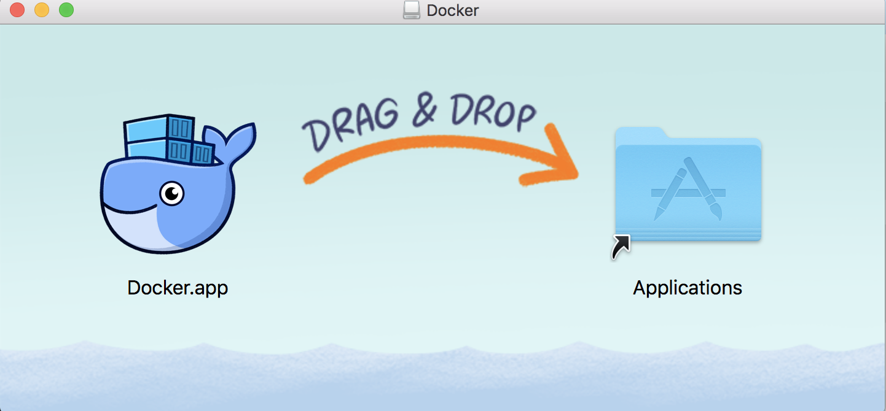
运行的时候只需要点击docker的图标就可以了；
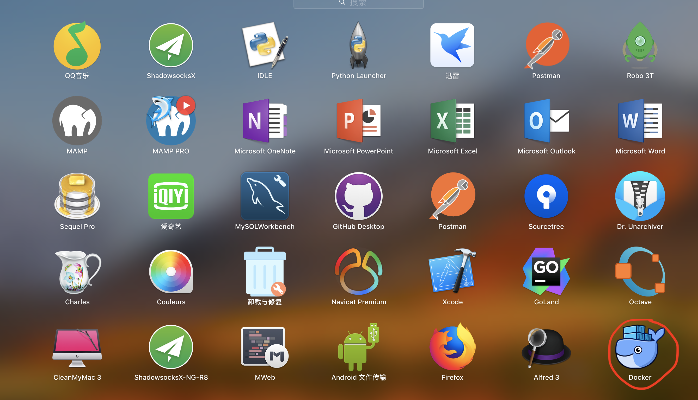
运行成功之后，上方菜单栏会出现docker的图标；
初次启动的时候，可能会有如下信息：
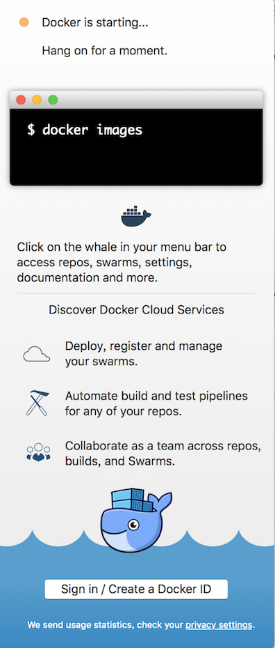
启动成功之后将会看到：
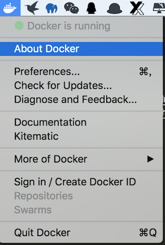
启动终端，查看docker是否安装成功：
1 | ➜ ~ docker --version |
如果docker version，docker info 都运行正确的话，可以尝试启动一个nginx试试：
docker run -d -p 8090:80 --name webserver nginx
一切正常的话，打开浏览器，输入：http://localhost:8090你将看到：
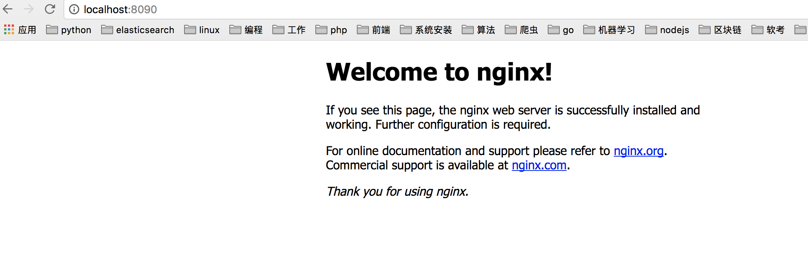
列出你创建的容器：1
2
3➜ ~ docker container ls -a
CONTAINER ID IMAGE COMMAND CREATED STATUS PORTS NAMES
e8f1f0e34944 nginx "nginx -g 'daemon of…" 3 minutes ago Up 3 minutes 0.0.0.0:8090->80/tcp webserver
停止启动的容器：
1 | ➜ ~ docker container stop e8f1f0e34944 |
删除你创建的容器：
1 | ➜ ~ docker container rm e8f1f0e34944 |
查看已经下载的镜像：
1 | ➜ ~ docker image ls |
镜像服务（加速器）
我们常用的Registry是docker官方的Docker Hub,这也是默认的 Registry，并拥有大量的高质量的官方镜像。还有quay.io。由于某些原因，在国内访问这些服务可能会比较慢。国内的一些云服务商提供了针对 Docker Hub 的镜像服务（Registry Mirror），这些镜像服务被称为加速器。常见的有：阿里云加速器,DaoCloud加速器；
开始使用docker
经过上面的步骤，想必你现在已经非常激动准备学习docker了，那我们就试试吧。接下来的教程中我们将分为以下六个部分来介绍：
- Orientation（定位）
- Build and run your first app
- Turn your app into a scaling service
- Span your service across multiple machines
- Add a visitor counter that persists data
- Deploy your swarm to production
应用程序本身非常简单，所以你不会被代码干扰太多。毕竟，Docker的价值在于它如何构建，发布和运行应用程序;对于你的应用程序实际上做什么是完全不可知的。
docker定位
我们一直在定义新的概念，所以非常建议在开始之前阅读一下什么是docker
在继续开始之前，你也需要掌握以下的基本知识：
- IP地址和端口
- 虚拟机
- 编辑配置文件
- 基本熟悉代码依赖和构建的概念
- 机器资源属于, 像CPU利用率，RAM使用
容器的简要说明
镜像（image）是一个轻量级的，独立的可执行程序包，包含运行一个软件所需的所有东西，包括代码，运行时，库，环境变量和配置文件。
容器是镜像的运行时示例，镜像运行时在内存中变成的内容，默认情况下，它与主机完全隔离，只有在配置的情况下才可访问主机的端口和文件。
容器在系统内核上就地运行应用程序，同通过管理程序获得一个接入主机资源的虚拟机相比，他有更好的性能特点，容器可以获得本地访问权限，每个容器都以独立的进程运行，相比其他的应用程序，不需要更多的内存。
虚拟机 VS 容器
虚拟机运行应用程序的原理：
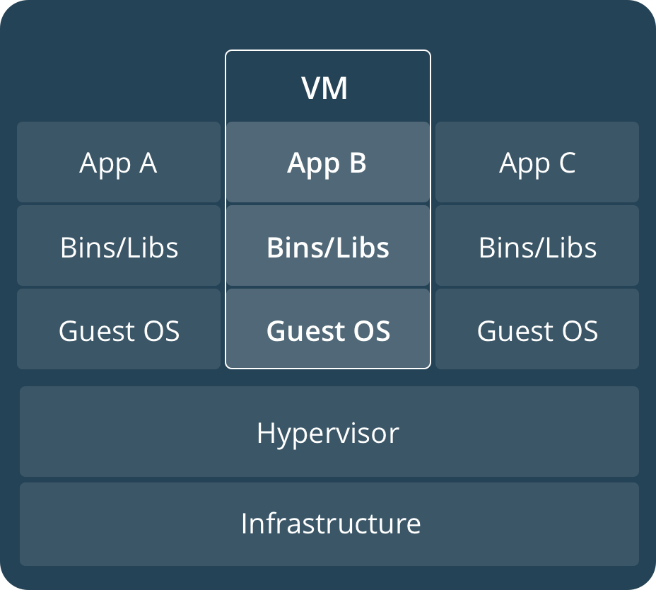
虚拟机运行客户操作系统， 注意在每个box中都有一个系统层。这是资源密集型，这将导致磁盘镜像，应用程序状态同系统设置，系统安装的依赖以及系统补丁纠缠在一起，而且容易丢失，很难复制。传统虚拟机技术就是虚拟出一套硬件后，在其上运行一个完整操作系统，在该系统上再运行所需应用进程；
容器运行应用程序的原理：
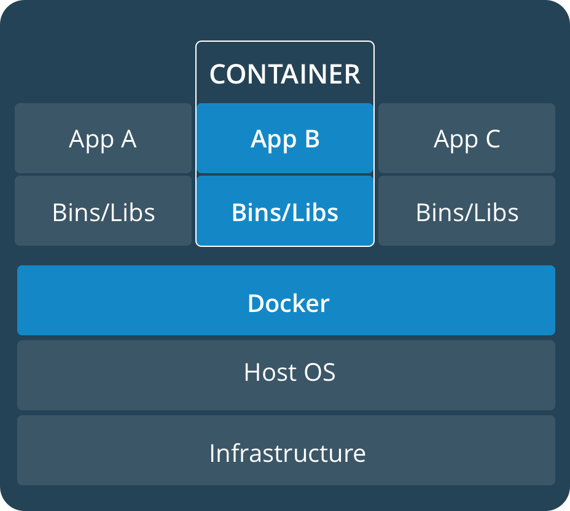
容器可以共享一个内核，并且唯一需要在容器镜像中的信息是可执行文件及其包依赖关系，它们永远不需要安装在主机系统上。这些进程的运行就如同本地的进程一样，你可以使用docker ps命令管理他们，就像你在linux平台使用ps命令查看本地进程一样，最后，因为他们包含了所有的依赖关系，就没有配置依赖的纠葛。一个集装箱化的应用程序可以随处运行。
构建并运行你的第一个应用程序
在本节开始之前，你可以运行docker run hello-world去测试你是否已经成功安装好docker了，不出问题，你将看到下面的结果：
1 | ➜ ~ docker run hello-world |
Introduction
现在是时候用docker的方式构建一个应用程序了，我们将从这个应用程序的底部开始构建，这个应用程序是一个容器，然后我们再在这一层上添加新的东西。在这个层次上面是一个服务，它定义了容器在生产环境中的行为，这个将在接下里的一节中讲到。最后在顶层是stacks，定义所有服务的交互，将在第五部分讲到。结构层次大概是这样式的：
- stacks
- Services
- containers（我们现在在这里）
Your new development environment
过去，你写一个PythonAPP的时候，流程的第一步就是在你的电脑上安装Python运行库。但是这将造成这样的情况，不仅需要一个能完美运行应用程序的本地环境，同时还需要一个与之匹配的生产环境。
使用docker，你可以将一个基础的可移植的Python运行环境作为一个镜像，然后你的构建将包括Python基础的镜像和你的应用程序代码，确保你的应用程序，它的依赖和运行时都是在一起的。
这些可移植的镜像可以由一个叫做Dockerfile的文件来进行定义。
Dockerfile
接下来要跟着一起来动手了，只有在动手的过程中才能体会到生命的乐趣。创建一个新的目录，并且切换到新的目录下创建一个文件：Dockerfile，复制粘贴下面的内容然后保存，可以看看里面的解释。
1 | # 使用一个官方的Python运行时作为基础 |
Dockerfile中涉及到几个文件我们还没有创建，app.py以及requirements.txt。
应用程序
我们在Dockerfile所在的目录下再创建两个文件：app.py以及requirements.txt，文件内容如下所述，这就算是补全我们的应用程序，虽说简单，但是五脏俱全。
requirements.txt
1 | Flask |
app.py
1 |
|
现在我们将看到pip install -r requirements.txt安装了flask和redis的Python扩展，应用将打印环境变量NAME以及socker.gethostname()的输出，但是由于我们没有安装redis服务，所以我们期望这里打印错误信息。
build app
现在我们构建我们的APP，在开始构建的使我们，在我们的应用目录下执行ls，应该至少看到以下这几个文件：Dockerfile, requirements.txt, app.py
现在我们执行构建命令，这将创建一个新的镜像，我们也使用-t创建一个友好的标签。
docker build -t firstapp .
构建的惊险在哪里？可以使用docker images 查看
1 | ➜ firstapp docker images |
Run the app
运行容器的时候，我们将使用-p参数将主机的4040端口映射到容器的80端口：
docker run -p 4040:80 firstapp
启动成功的时候你将看到一个来自容器内部的消息：* Running on http://0.0.0.0:80/ (Press CTRL+C to quit), 因为容器并不知道我们将80端口映射到了4040，所以在浏览器中输入以下URL进行访问：http://localhost:4040,我们将看到以下的结果：
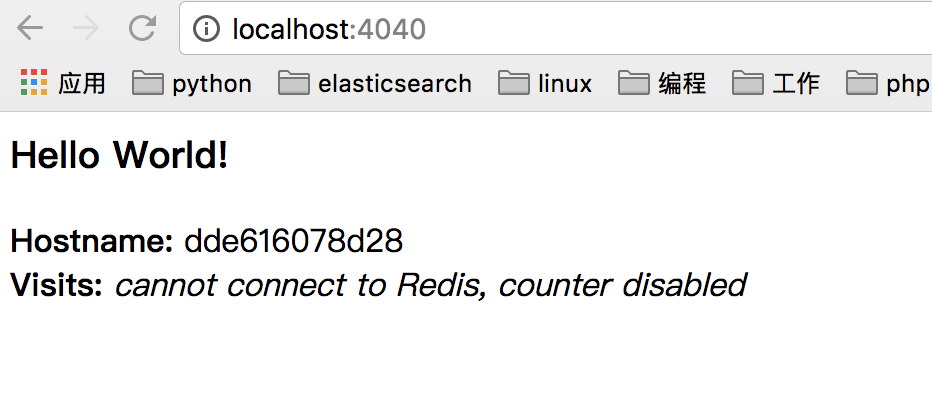
使用`CTRL+C`进行退出
现在我们将以分离模式在后台运行我们的应用程序，这个命令将返回一个运行应用程序的容器ID：
docker run -d -p 4040:80 firstapp
我们的容器现在运行与后台，可以通过：docker container ls命令查看正在运行的容器机器信息：
1 | ➜ firstapp docker container ls |
现在我们可以使用docker container stop {containerID}来结束容器进程，例如：docker container stop 869b8478cea7
share your image
为了验证可移植性，我们将刚刚创建的镜像上传然后在其他地方运行。毕竟你需要知道当部署应用到生产环境的时候如何推送镜像到registry。一个registry是一系列的集合，一个仓库是一系列镜像的集合。一个 Docker Registry 中可以包含多个仓库（Repository）；每个仓库可以包含多个标签（Tag）；每个标签对应一个镜像。
通常，一个仓库会包含同一个软件不同版本的镜像，而标签就常用于对应该软件的各个版本。我们可以通过 <仓库名>:<标签> 的格式来指定具体是这个软件哪个版本的镜像。如果不给出标签，将以 latest 作为默认标签。
以 Ubuntu 镜像 为例，ubuntu 是仓库的名字，其内包含有不同的版本标签，如，14.04, 16.04。我们可以通过 ubuntu:14.04，或者 ubuntu:16.04 来具体指定所需哪个版本的镜像。如果忽略了标签，比如 ubuntu，那将视为 ubuntu:latest。
仓库名经常以 两段式路径 形式出现，比如 jwilder/nginx-proxy，前者往往意味着 Docker Registry 多用户环境下的用户名，后者则往往是对应的软件名。但这并非绝对，取决于所使用的具体 Docker Registry 的软件或服务。
执行命令docker login使用dockerID进行登录。
执行命令docker tag image username/repository:tag 给镜像打标签，例如：docker tag firstapp gamelife1314/firstapp:0.1
执行命令docker push gamelife1314/firstapp:0.1发布镜像；
发布成功之后我们可以使用docker run -p 4040:80 gamelife1314/firstapp:0.1在任何机器上运行我们的应用程序了。
本节常用docker命令列表
1 | docker build -t friendlyhello . # 使用当前目录下的Dockerfile创建镜像 |
Services
在这部分中，我们扩展了应用程序并实现了负载平衡。要做到这一点，我们必须在分布式应用程序的层次结构中上一级：服务。
在分布式应用程序中，应用程序的不同部分被称为“服务”。例如，如果您想象一个视频共享站点，它可能包括一个用于将应用程序数据存储在数据库中的服务，后台运行的转码服务，一个用于前端的服务等等。
服务实际上只是“生产中的容器”。服务只运行一个镜像，但它定义了镜像运行的方式 - 应该使用哪个端口，容器应该运行多少个副本以便达到所需的容量，以及等等。Scaling a service changes the number of container instances running that piece of software, assigning more computing resources to the service in the process（扩展一个服务会改变运行该软件的容器实例的数量，已分配给程序中的服务更多的计算资源）.
第一个docker-compose.yaml文件格式
docker-compose.yaml是一个YAML格式的文件，描述了生产环境中docker的行为方式。
docker-compose.yaml:1
2
3
4
5
6
7
8
9
10
11
12
13
14
15
16
17
18
19version: "3"
services:
web:
# 使用前一节创建的镜像
image: gamelife1314/firstapp:0.1
deploy:
replicas: 5
resources:
limits:
cpus: "0.1"
memory: 50M
restart_policy:
condition: on-failure
ports:
- "4040:80"
networks:
- webnet
networks:
webnet:
这个docker-compose.yaml 告诉docker做以下的事情：
- 从registry中拉取创建的镜像；
- 运行镜像的5个实例作为一个服务叫做
web，限制每一个实例使用资源的上限 10% of the CPU (across all cores), 以及 50MB of RAM. - 如果有一个失败，立即重启容器；
- 映射主机的4040端口到容器的80端口；
- 指示web容器通过叫做webnet的负载均衡网络共享端口80；
- 使用默认设置定义webnet网络；
运行你的负载均衡应用程序
首先运行命令：docker swarm init
然后运行：docker stack deploy -c docker-compose.yaml firstapp firstapp是应用程序名称；
我们单个service stack 在一个主机上运行了镜像的5个实例，可以通过docker srevice ls查看我们应用的服务id；
1 | ➜ firstapp docker service ls |
从输出可以看到，我们服务的id（vyonexbatp5t），名称(firstapp_web)，模式replicated，副本个数以及端口映射；
运行于一个服务中的一个容器叫做task(A single container running in a service is called a task), 每个task都有一个数字增加唯一的ID，最终同你在docker-composer.yaml中定义的数量一致；我们通过如下命令查看service中的task：1
2
3
4
5
6
7➜ firstapp docker service ps firstapp_web
ID NAME IMAGE NODE DESIRED STATE CURRENT STATE ERROR PORTS
qiomtjzp1wer firstapp_web.1 gamelife1314/firstapp:0.1 linuxkit-025000000001 Running Running 8 minutes ago
m86tz9u8nc8p firstapp_web.2 gamelife1314/firstapp:0.1 linuxkit-025000000001 Running Running 8 minutes ago
r2sh5vc9svno firstapp_web.3 gamelife1314/firstapp:0.1 linuxkit-025000000001 Running Running 8 minutes ago
ukz1xon9fm63 firstapp_web.4 gamelife1314/firstapp:0.1 linuxkit-025000000001 Running Running 8 minutes ago
wkbb1mhejp1q firstapp_web.5 gamelife1314/firstapp:0.1 linuxkit-025000000001 Running Running 8 minutes ago
如果你只列出系统中的所有容器，也会显示任务，但不会按服务过滤，使用下列命令可以查看服务的task：
1 | ➜ firstapp docker container ls -q |
通过在浏览器中访问：http://localhost:4040可以看到每次请求的时候，hostname都会变化，因为我们启动了5个实例，每个实例都在各自的容器中运行，每次请求的时候基于轮询机制选择一个container处理请求；
但你需要扩展你的应用的时候，你只需要更改docker-compose.yaml中的replicas的数量，然后重新执行docker stack deploy命令：
docker stack deploy -c docker-compose.yaml firstapp
停止APP和swarm：
- 停止应用：
docker stack rm firstapp - 停止swarm：
docker swarm leave --force
本节用到的docker命令
1 | docker stack ls # List stacks or apps |
Swarms
在前一节，我们将我们开发的firstapp通过转化为服务来定义应该如何在生产中运行，并在此过程中将运行的进程数量扩展5倍。
本节中，我们将把我们的应用部署在一个集群中，并在多台机器上运行它。通过将多台机器连接到称为集群的“Dockerized”集群，使多容器，多机器应用成为可能。
什么是swarm？swarm是一群运行着docker并加入到集群的一组机器。在这之后，我们可以继续运行docker命令，但是它是由docker集群管理器在集群上运行。集群中的机器可以是物理的也可以是虚拟的。在加入集群后，他们被称为节点。
Swarm管理器可以使用多种策略来运行容器，比如“最空的节点”（emptiest node）-—— 它用容器填充最少使用的机器。或“全局”，这确保了每台机器只能得到指定容器的一个实例。你可以指示swarm manager在Compose文件中使用这些策略。
swarm管理器是集群中唯一可以执行你命令的机器，以及认证其他的机器以加入swarm集群成为一个worker，worker在那里仅仅提供能力，并没有权利去告诉其他机器做什么。
到目前未知，我们还只是在本地机器上使用docker，但是docker可以切换到swarm模式，切换到swarm模式之后，会使当前机器成为一个swam管理器，从接下来开始，docker会在swarm上运行你的命令，而不仅仅是在当前机器上。
创建并设置swarm
首先应用：docker searm init命令使本机成为了swarm管理器，然后在其他机器上执行命令：docker swarm join加入我们创建的集群；
Local VMs (Mac, Linux, Windows 7 and 8)，在这些设备上，你首先需要一套管理程序创建虚拟机，下载virtualbox并且安装。不过要注意的是你如果工作在Windows10或者已经安装了Hyper-V，就没必要安装virtualbox了。如果你已经安装了Docker toolbox，那么你也就已经安装过virtualbox。按照如下创建两个虚拟机：
docker-machine create --driver virtualbox myvm1
docker-machine create --driver virtualbox myvm2
Local VMs (Windows 10/Hyper-V), 请参照https://docs.docker.com/get-started/part4/#create-a-cluster
到这里，我们已经创建了两个虚拟机：myvm1和myvm2, 使用docker-macbine ls查看已经创建的虚拟机：
➜ ~ docker-machine ls
NAME ACTIVE DRIVER STATE URL SWARM DOCKER ERRORS
myvm1 - virtualbox Running tcp://192.168.99.100:2376 v18.01.0-ce
myvm2 - virtualbox Running tcp://192.168.99.101:2376 v18.01.0-ce
接下来，初始化swarm并且添加节点，我们让第一台机器成为swarm管理器，然后让第二台节点加入集群作为一个worker。给虚拟机发送命令使用：docker-machine ssh，我们让myvm1成为docker管理器，例如：
➜ ~ docker-machine ssh myvm1 "docker swarm init --advertise-addr 192.168.99.100"
Swarm initialized: current node (w5zifdyhjd6dzrz26l8mapw73) is now a manager.
To add a worker to this swarm, run the following command:
docker swarm join --token SWMTKN-1-3gtyem6r1g1chuzjox3cp095wispcuifa63th119qmqr1tvq0q-aclwkny59p8sd6m1qdxhtjd4y 192.168.99.100:2377
To add a manager to this swarm, run 'docker swarm join-token manager' and follow the instructions.
这里有两个端口需要解释一下：2377和2376，总是运行命令docker swarm init和docker swarm join在2377端口（docker manager port）,也可以不填，让它默认；docker-machine ls命令返回的2376端口是docker Damon的端口。
还有要注意的是在执行命令docker swarm init之前，确保打开各个机器上7946和4789端口
现在我们让myvm2加入这个swarm集群作为一个worker，使用命令：docker swarm join --token <token> <ip>:<port>, ip是swarm管理器的ip，这里就是myvm1的地址，例如：
➜ ~ docker-machine ssh myvm2 "docker swarm join --token SWMTKN-1-3gtyem6r1g1chuzjox3cp095wispcuifa63th119qmqr1tvq0q-aclwkny59p8sd6m1qdxhtjd4y 192.168.99.100:2377"
This node joined a swarm as a worker.
执行命令：docker node ls查看docker集群中的节点，例如：
➜ ~ docker-machine ssh myvm1 "docker node ls"
ID HOSTNAME STATUS AVAILABILITY MANAGER STATUS
w5zifdyhjd6dzrz26l8mapw73 * myvm1 Ready Active Leader
xw9rm1a3vboycgelfujbtvbx6 myvm2 Ready Active
如果你想重新开始，在每个机器节点运行docker swarm leave。
在swarm集群中部署我们的APP
到目前为止，我们还只是使用docker-machine ssh去和虚拟机通信，还有一个方式是运行docker-machine env <machine>获取或者运行一个命令配置你当前的shell然后和虚拟中的docker引擎通信。这个方法对于部署应用更好，因为它允许我们使用本地的docker-compose.yaml文件“远程”地部署应用，而不必复制到任何地方。默认我们在执行docker命令的时候，它会从本地环境中获取一个默认的docker host，然而我们在执行命令：eval $(docker-machine env myvm1)，我们接下来的命令就会直接操作myvm1中docker引擎，不过这个改变只是在当前shell，并不影响其他的shell或者后面新打开的shell；因为docker整个的架构是一个cs架构，docker命令的执行最终都是提交到服务器，我们在开发的过程中，都是默认连接到我们的本地docker服务器，如果要操作远程的docker，我们只需更改环境变量：DOCKER_HOST。
我们看看从docker-machine env myvm1中获取了哪些命令：
➜ firstapp docker-machine env myvm1
export DOCKER_TLS_VERIFY="1"
export DOCKER_HOST="tcp://192.168.99.100:2376"
export DOCKER_CERT_PATH="/Users/fudenglong/.docker/machine/machines/myvm1"
export DOCKER_MACHINE_NAME="myvm1"
# Run this command to configure your shell:
# eval $(docker-machine env myvm1)
果不其然，这里设置了DOCKER_HOST，让接下运行命令直接操作虚拟机中的docker，那我们执行以下命令：eval $(docker-machine env myvm1);
接下来，我们开始在我们的swarm中部署我们的应用，到这里，我们已经设置了我们的当前shell操作虚拟机中的docker，我们依然采用在前一节中开发的docker-composer.yaml来部署我们的应用，应该还记得docker stack deploy命令吧，然后使用docker service ps <service_name>查看我们的应用是否已经部署。
执行部署命令：docker stack deploy -c docker-compose.yml firstapp，任然可以通过docker service ls 和 docekr service ps <service_name>查看服务：
➜ firstapp docker service ls
ID NAME MODE REPLICAS IMAGE PORTS
tma8f1zhxbbg firstapp_web replicated 2/5 gamelife1314/firstapp:0.1 *:4040->80/tcp
➜ firstapp docker service ps firstapp_web
ID NAME IMAGE NODE DESIRED STATE CURRENT STATE ERROR PORTS
j208a3t9ksbx firstapp_web.1 gamelife1314/firstapp:0.1 myvm1 Running Running 4 minutes ago
4b90tmv13wuw firstapp_web.2 gamelife1314/firstapp:0.1 myvm2 Running Preparing 12 minutes ago
jb96cckpn9n4 firstapp_web.3 gamelife1314/firstapp:0.1 myvm2 Running Preparing 12 minutes ago
scjn2ooqaeov firstapp_web.4 gamelife1314/firstapp:0.1 myvm1 Running Running 4 minutes ago
4c4d50ngzh4i firstapp_web.5 gamelife1314/firstapp:0.1 myvm2 Running Preparing 12 minutes ago
从上面看到，我的副本只启动了两个，其他的还在准备中，网速原因需要时间获取镜像。不过我们可以访问我们的服务了，地址栏中输入：http://192.168.99.100:4040，将会看到：
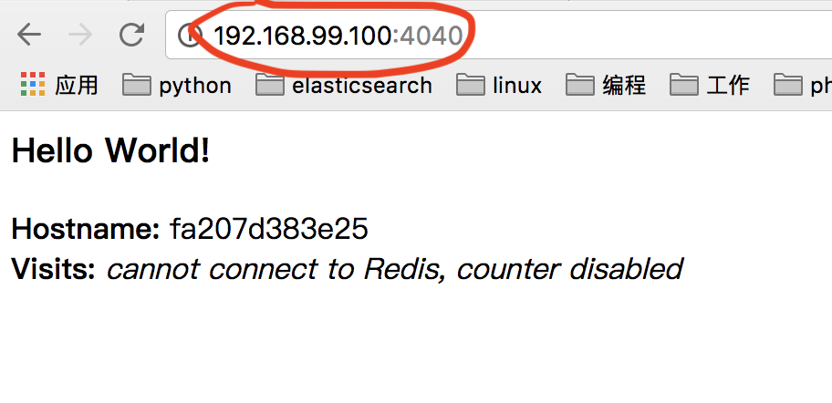
这儿将有5个可能的容器ID随机循环，正好验证了负载均衡。
迭代和扩展应用
扩展应用只需更改docker-compose.yaml，然后通过docker stack deploy -c docker-compose.yaml firstapp命令来更新；
更新代码之后可以重新构建应用，然后push，最后只需简单的执行命令docker stack deploy -c docker-compose.yaml firstapp就可以应用这些变化。
如果有新的节点要加入，只需简单的执行命令：docker swarm join命令加入一个新的节点，然后执行docker stack deploy -c docker-compose.yaml firstapp，我们的应用就会利用这些资源。
清理或者重启
可以执行命令：docker stack rm firstapp 删除我们的应用；
你也可行删除创建的swarm集群，通过在worker上执行命令：docker-machine ssh myvm2 "docker swarm leave" 或者在manager上执行：docker-machine ssh myvm1 "docker swarm leave --force",不过先别动，我们接下来还要用。
恢复我们的shell至原始状态：eval $(docker-machine env -u)。
可以重启我们的虚拟机通过docker-machine restart myvm1，更多的操作请看：docker-machine --help
本节中用到的命令
1 | docker-machine create --driver virtualbox myvm1 # 创建一个虚拟机 (Mac, Win7, Linux) |
Stacks
在前一部分中，我们创建了一个swarm，它是有一群运行着docker的机器组成的集群，而且部署了一个应用，容器在多个机器上运行。
在本部分中，我们将到达分布式应用的顶部，我们将讲解新的概念：stack。stack是由一组共享依赖的相关服务组成，可以被一起部署和扩展，单个stack能够定义和协调真个应用程序的功能。
我们从第三部分就开始一直在使用compose文件部署应用，但是这是运行在单个机器上上的单个服务堆栈。在这里，我们可以应用我们已经学到的东西，让多个服务相互关联，并在多个机器上部署运行。
添加一个新的服务并且重新部署
编辑我们的docker-compose.yaml，添加新的可视化服务：1
2
3
4
5
6
7
8
9
10
11
12
13
14
15
16
17
18
19
20
21
22
23
24
25
26
27
28
29version: "3"
services:
web:
image: gamelife1314/firstapp:0.1.1
deploy:
replicas: 5
resources:
limits:
cpus: "0.1"
memory: 50M
restart_policy:
condition: on-failure
ports:
- "4040:80"
networks:
- webnet
visualizer:
image: dockersamples/visualizer:stable
ports:
- "8080:8080"
volumes:
- "/var/run/docker.sock:/var/run/docker.sock"
deploy:
placement:
constraints: [node.role == manager]
networks:
- webnet
networks:
webnet:
然后保证连接当前shell到myvm1，否则重新执行：eval $(docker-machine env myvm1);
接下来重新部署，执行命令：docker stack deploy -c docker-compose.yaml firstapp
部署完成之后，执行命令docker service ls查看服务器运行情况：1
2
3
4➜ firstapp docker service ls
ID NAME MODE REPLICAS IMAGE PORTS
xr8uo13ffc74 firstapp_visualizer replicated 1/1 dockersamples/visualizer:stable *:8080->8080/tcp
tma8f1zhxbbg firstapp_web replicated 5/5 gamelife1314/firstapp:0.1.1 *:4040->80/tcp
看到完美运行之后，打开浏览器输入http://192.168.99.100:8080/，应该看到如下结果：
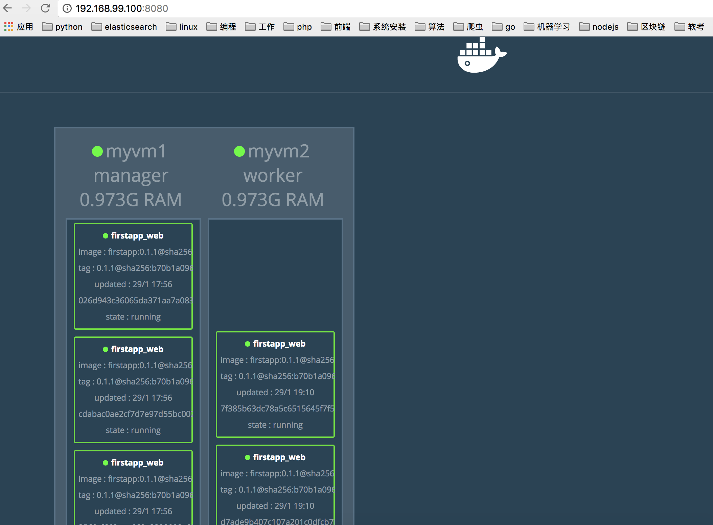
数据持久化
和前面添加可视化服务一样，我们新添加一个新的服务redis用户持久化数据。
- 首先修改
docker-compose.yaml，添加redis服务，如下：
1 | version: "3" |
docker官方镜像库中存在一个官方镜像发Redis，可以直接使用短名称redis，不必使用username/tag这样的格式；redis镜像已经预先配置了向容器外部暴露6379端口，我们的compose文件中又把这个端口暴露给虚拟机外部，我们可以直接在外部使用；
最重要的是，我们确定了两件事情，保证redis的数据持久化。第一，redis总是运行在swarm管理器上，这样他每次都是使用相同的文件系统。第二，redis存储它的数据在redis容器的/data目录中，为了不让在容器重启之后删除数据，我们把redis的数据持久化到swarm管理器上，通过挂在数据卷/home/docker/data:/data。
在swarm管理器上创建目录
/home/docker/data：docker-machine ssh myvm1 "mkdir ./data"通过
docker-macnine ls查看你的shell是否连接到myvm1(active是星号),如果没有，重新执行：eval $(docker-machine env myvm1);运行命令：
docker stack deploy -c docker-compose.yaml firstapp浏览器中输入：
http://192.168.99.100:4040/,应该会看到：
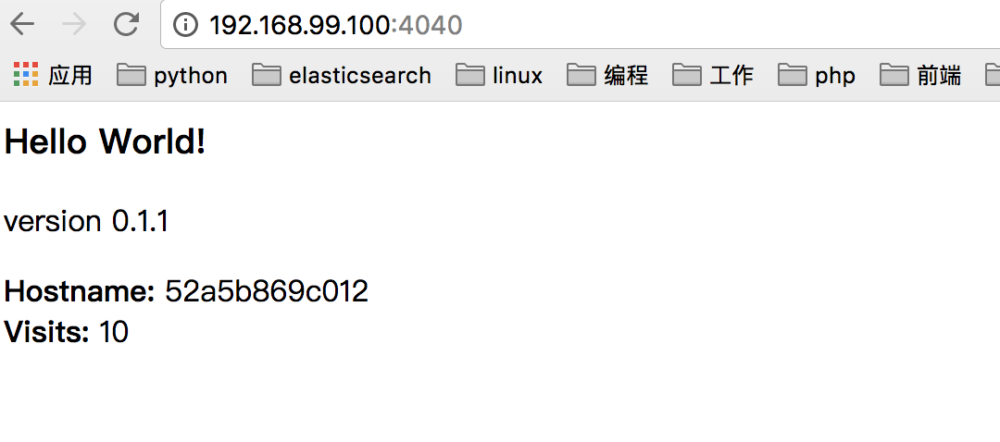
Docker 概述
docker是一个用于开发，运输和运行应用程序的开放平台。Docker能够让你将应用程序与基础架构分离，从而可以快速交付软件。使用Docker，你可以像管理应用程序一样管理基础架构。通过利用Docker的方法来快速地提交，测试和部署代码，可以显着缩短编写代码和在生产环境中运行代码之间的延迟。
docker platform
Docker提供了在称为容器的松散隔离的环境中打包和运行应用程序的能力。容器的隔离性和安全性可以让你同时在一个平台上运行多个容器。容器是非常轻量级的，因为他们不需要额外的管理程序，而是直接运行在主机系统的内核中。这意味着你可以在给定的硬件平台上运行更多的容器而不是虚拟机，你甚至可以再虚拟主机中运行docker。
docker提供工具和平台来管理容器的声明周期：
- 使用容器开发应用程序及其支持组件；
- 容器成为测试和发布应用程序的单位；
- 准备就绪后，可以将你的应用程序作为一个容器部署到生产环境中去，无论生产环境在本地还是数据中心，云服务商，操作都是一样的。
docker engine
docker engine 是具有以下主要组件的CS应用程序：
- 服务（Server）是一个一致运行的守护进程，叫做：dockerd.
- 可以通过Server提供的RESTFUL api 和服务进行通信以及指示他做什么。
- 一个命令行接口CLI客户端，docker 命令,

docker cli 通过docker提供的restful api来和docker daemon 服务进行交互，我们可以使用docker命令或者直接使用docker提供api；
daemon服务创建并管理docker对象，例如：镜像，容器，网络以及数据卷。
What can I use Docker for?
快速，一致地应用程序交付
docker通过使用提供给开发者应用和服务的容器，让开发者工作在一个标准的环境中，从而简化开发的生命周期。docker非常适合持续集成(CI)和持续交付(CD)的工作流程。参考以下的案例场景：
- 开发者通过docker与同事分享本地开发的代码；
- 使用docker将应用程序推送到测试环境，执行手动和自动测试；
- 当开发者发现bug的时候，他们可以在开发环境中修复并且重新提交到测试环境进行验证；
- 测试完成之后，将修复之后的版本推送给客户就如同将更新的镜像推送到生产一样简单。
响应式部署和扩容
Docker的基于容器的平台允许高度可移植的工作负载。 Docker容器可以在开发人员的本地笔记本电脑，数据中心的物理或虚拟机器，云提供程序或混合环境中运行。 Docker的可移植性和轻量级特性也使得动态管理工作负载变得非常容易，几乎实时地按业务需求扩展或拆除应用程序和服务。
同一硬件平台上能干更多事情
Docker是轻量级和快速的。它为基于虚拟机管理程序的虚拟机提供了一种可行的，具有成本效益的替代方案，因此您可以使用更多计算容量来实现业务目标。
Docker是高密度环境和中小型部署的理想选择，您需要用更少的资源做更多的事情。
Docker 架构
docker使用了一个CS架构，docker客户端和docker的守护进程进行通信。Docker守护进程负责构建，运行和分发Docker容器。docker客户端可以运行在同一个机器上，但是docker客户端也可以连接远端的docker服务。docker客户端和docker守护进程的交互通过一个restfulAPI，或者Unix socket，或者一盒网络接口。

docker daemon
docker 守护进程（dockerd）监听API请求，管理docker对象，例如：镜像，网络，容器和卷。守护进程之间也可以相互交流管理docker的服务。
docker client
docker 客户端是很多用户用于和docker交互的方式。例如，当你用命令：docker run的时候，客户端会将命令发送给dockerd，然后dockerd处理他们。docker客户端使用docker的API，可以同一个或者多个docker守护进程进行交互。
Docker registries
docker registry 用于存储docker镜像。docker hub 和 docker cloud 是公共的 registry，任何人都可以使用。docker默认从docker hub 获取镜像。当然你也可以使用自己的registry。
当你用docker pull或者docker run命令的时候，需要的镜像会从你配置的registry获取。当你用docker push的时候，你的镜像会被推送到你配置的registry。
[Docker Store]允许你出售后者购买docker镜像，也可以免费发布。例如，您可以购买包含来自软件供应商的应用程序或服务的Docker镜像，并使用该镜像将应用程序部署到您的测试和生产环境中。您可以通过拉取新版本的图像并重新部署容器来升级应用程序。
Docker Objects
images 镜像
镜像是一个只读模板，带有创建一个容器的基本指令。通常情况下，一个镜像是依赖于另一个镜像，然后在添加一些自定义的东西。例如，你可能会创建一个镜像依赖于ubuntu镜像，但是会安装Apache web服务器和应用程序，以及使应用程序运行的具体细节。
你可以自己创建镜像，也可以使用有由他人创建的发布在registry中的镜像。为了创建一个镜像，你可能会创建一个Dockerfile并且使用一些简单的语法定义创建你的镜像的步骤。Dockerfile中每个指令都会在镜像中创建一个新层。当你改变Dockerfile重建镜像的时候，只有那些发生改变的层才会被重建。和其他虚拟化技术起来，这是镜像轻快，小巧快速的体现。
container 容器
一个容器是一个镜像运行的示例，你可以使用docker的API创建，启动，停止，移动和删除镜像，你可以将一个容器连接到一个或多个网络，将存储连接到它，甚至可以基于当前状态创建一个新的镜像。
默认情况下，一个容器和主机上的其他容器是相对独立的，你可以控制容器的网络，存储或其他底层子系统与其他容器或主机的隔离程度。
一个容器有一个镜像定义以在启动或者创建的时候提供的配置选项，当一个容器被移除的时候，如果他的状态的任何改变没有被持久化存储，都将消失。
执行docker run的例子
以下命令启动一个ubuntu容器，以交互式方式附加到本地命令行会话，并运行/bin/bash
docker run -i -t ubuntu /bin/bash
当你运行这个命令的时候，流程大概是这样的（这里假设你使用默认的registry）：
如果你本地没有
ubuntu这个镜像，docker将从你配置的registry拉取，就像你手动执行：docker pull ubuntu一样；docker创建一个新的容器就像手动执行
docker create一样。Docker将一个读写文件系统分配给容器，作为它的最后一层。这允许正在运行的容器在其本地文件系统中创建或修改文件和目录。
如果没有指定任何网络选项，Docker会创建一个网络接口来将容器连接到默认网络。这包括分配一个IP地址给容器。默认情况下，容器可以使用主机的网络连接连接到外部网络。
docker启动容器并且执行：
/bin/bash,由于容器是交互式运行并且连接我们的终端（使用-i或者-t标识）,因此你可以使用键盘输出，而且输出将输出到你的终端。当你输入
exit退出终端的时候，容器将会停止但是没有被移除，你可以再次启动它或者移除。
Services
通过服务，你可以跨多个Docker守护进程扩展容器，这些守护进程可以作为一个拥有多个manager和worker的群组一起工作。swarm中的每个成员都是一个Docker守护进程，守护进程都使用Docker API进行通信。服务允许你定义所需的状态，例如在任何给定时间必须可用的服务副本的数量。默认情况下，该服务在所有工作节点之间进行负载平衡。对于消费者来说，Docker服务似乎是一个单一的应用程序。 Docker引擎在Docker 1.12及更高版本中支持swarm模式。
底层技术
docker使用go开发的，并且利用了linux底层的一些特性来完成他的功能。
Namespaces
docker使用名为namespaces的技术为容器提供独立的工作空间。当你运行该容器的时候，docker会为该容器创建一组命名空间。
docker引擎使用linux上如下的命名空间：
- The
pidnamespace: 进程独立(pid: process id) - The
netnamespace: 管理网络（net: networking） - The
ipcnamespace: 管理对ipc资源的访问(IPC: InterProcess Communication) - The
mntnamespace: 管理文件系统挂载点（mnt: mount） - The
utsnamespace: 隔离内核和版本标识符(UTS: Unix Timesharing System).
Control groups
Linux上的Docker Engine也依赖于另一种称为控制组（cgroups）的技术。 cgroup将应用程序限制为一组特定的资源。控制组允许Docker引擎将可用的硬件资源共享给容器，并可选地强制实施限制和约束。例如，可以将可用内存限制在特定的容器中。
Union file systems
Union文件系统或UnionFS是通过创建图层来运行的文件系统，使得它们非常轻巧，快速。 Docker引擎使用UnionFS为容器提供构建块。 Docker引擎可以使用多种UnionFS变体，包括AUFS，btrfs，vfs和DeviceMapper。
Container format
Docker引擎将名称空间，控制组和UnionFS组合成一个名为容器格式的包装器。默认的容器格式是libcontainer。将来，Docker可能会通过集成诸如BSD Jails或Solaris Zones等技术来支持其他容器格式。